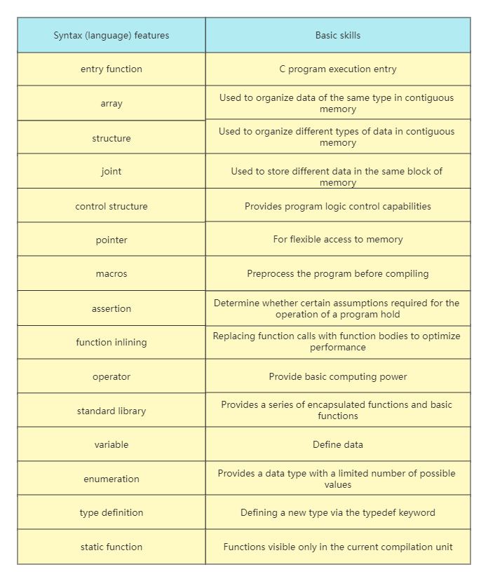
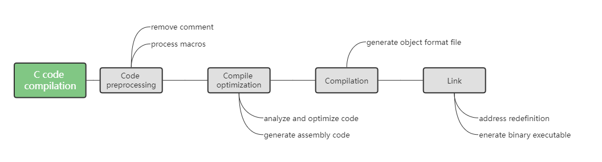
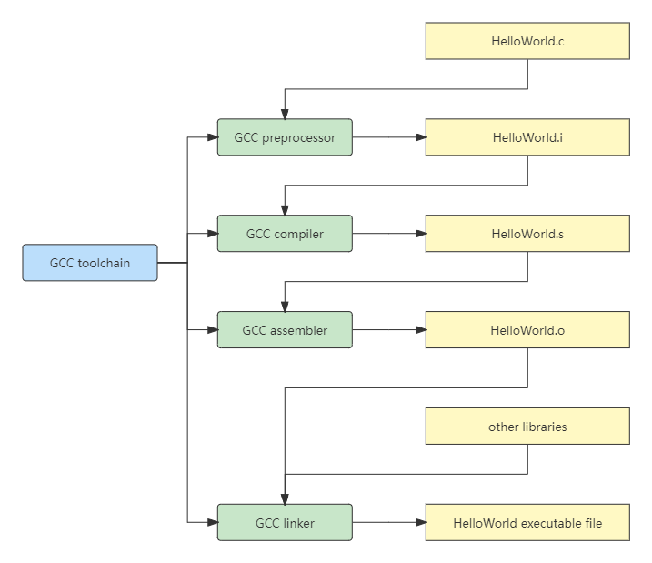

Quick review of C core syntax with a program
There are many mature C compilers on the market to choose from, but different compilers may have differences in supported platforms (Unix-like, Windows) and C standards (C89, C99, C11, C17), so you need to choose Pay special attention to these issues. Both GCC and Clang used in this course support the latest C standard, C17, and both run on Unix-like and Windows systems.
#include <stdlib.h>
#include <stdio.h>
#include <stdint.h>
#include <assert.h>
#include <stdbool.h>
#define BOOL_TRUE 1
#define BOOL_FALSE 0
#define typename(x) _Generic((x),\
unsigned short: "unsigned short int",\
unsigned long: "unsigned long int",\
default: "unknown")
typedef enum {HOST,IP} IP_ADDR_TYPE;
typedef struct {
size_t id;
uint16_t port;
bool closed;
IP_ADDR_TYPE addr_type;
union {
char host_name[256];
char ip[24];
};
} CONN;
inline static const char* findAddr(const CONN* pip) {
assert(pip != NULL);
return pip->addr_type == HOST?pip->host_name:pip->ip;
}
int main(int argc, char* argv[]){
static_assert(sizeof(CONN)<=0x400,"the size of CONN object exceeds limit.");
const CONN conns[] = {
[2] = {1,80,BOOL_TRUE,IP,{ .ip= "127.0.0.1"}},
[0] = {2,8080,BOOL_FALSE,IP,{ .ip= "192.168.1.1"}},
{3,8088,BOOL_FALSE,HOST,{ .host_name= "http://localhost"}}
};
for (size_t i = 0; i<(sizeof(conns)/sizeof(CONN));++i) {
printf(
"Port: %d\n"
"Host/Addr:%s\n"
"Internal type of `id` is: %s\n\n",
conns[i].port,
findAddr(&conns[i]),
typename(conns[i].id)
);
}
return EXIT_SUCCESS;
}
This code uses many language features spanning the K&R C to C17 standard, creates multiple objects based on custom types, and prints information about these objects at the end of the program.
Entry Function
All C programs use the main function as the entry function. The entry function refers to the function that will be called first in the code when the program starts running. In the main function, we can selectively access the external parameters passed by the user to the program when the program starts running through the actual parameters it receives.
The main function returns an integer at the end of execution, which is used to indicate the state of the program at the end of execution. Usually, the number 0 is returned to indicate that the program exits normally, and other numbers are returned to indicate abnormal exit. In order to keep the code readable, here we use the macro constant EXIT_SUCCESS defined in the standard library as the return value of the program exit. As the name implies, the actual value corresponding to this macro constant is the number 0.
Array
Inside the main function, we use the “brace-enclosed lists” method to complete the initialization process of the array conns. And in the initialization list, we also use assigned initialization (set “designator” for the items in the initialization list) to explicitly specify the specific position of these items in the array. For example, the “[2]” corresponding to the first item here means that the item is set to the third element in the array conns (the index starts from 0).
Structure and Union
Inside the array conns, there are several structure objects of type CONN. In the C language, Structures and Unions (sometimes called structures and unions) are often used to organize complex types of custom data. In a Structure, the corresponding data of all defined fields are arranged in the direction of memory contiguous; in a Union, only one of the defined fields can be “valid” at the same time.
Array-like parenthesized list initialization, as well as assignment initialization, is also used during initialization of the struct CONN object. But unlike the previous array initialization, the assignment here is for the member fields inside the Structure and Union type, so you need to use the “.” symbol to refer to a specific member, not the form used by the array.
Control Structure
Use the for statement to loop through the contents of the array conns. In addition, commonly used control structures in C language include switch statement, while statement, and goto statement, etc.
Pointer
Pointers are one of the most dangerous but also the most powerful “weapons” in the C language. With the help of pointers, we can flexibly manipulate the memory resources that the program enjoys.
We pass the address of each element in the array conns to the function findAddr, which receives a constant pointer to an object of type CONN. So, with this pointer, we cannot modify the value of the object pointed to by the pointer inside the function. And this, to a certain extent, ensures that the function can only have the minimum permissions enough to complete its task.
Macro
The compiler’s processing of C source code is divided into several stages, with macros being the first part to be processed. At the beginning of this code, we introduce some external dependencies required for the normal operation of the program through the macro instruction “#include”, which will be replaced when the program is compiled. Then, we define the corresponding macro constants and macro functions through the “#define” directive, and the macro function typename uses the _Generic keyword newly introduced by the C11 standard to implement macro-based generics.
Assertion
In C code, we usually use assertions to check some hypothetical condition that needs to support the normal operation of the program. When the condition is not satisfied, the program will be terminated when the program is compiled or run, and a corresponding error message will be thrown to the user.C language provides two types of assertions, static and dynamic. Static assertions are checked when the code is compiled, while dynamic assertions are checked when the assertion statement is executed during program execution.
Function Inlining
In the definition code of the function findAddr, we add a keyword named inline to it. By using this keyword, we can “advise” the compiler to directly replace the internal logic of the function at the calling location of the function, so as to reduce the overhead generated when the function is called. This method is usually used for functions whose function bodies are small and will be called multiple times to produce significant performance improvements.
Other Features
If you are unfamiliar with some of these features, you can choose to find and learn about specific topics directly on the GeeksforGeeks website, or check out the introductory books 《C Primer Plus》.
Summary

C programming paradigm
Syntax details aside, in general, C is an “imperative” programming language, similar to Java, C#, Go, etc.
Imperative programming is a programming paradigm that describes how a program should run using code statements that can change the state of the program. This approach focuses more on the specific steps that the computer needs to perform to complete the task.
Taking the C language as an example, the steps to solve this requirement may be as follows: use an array to construct a memory space that can store these numbers; use a loop control statement to check whether the numbers in the memory meet the requirements (that is, greater than 7) in turn; For numbers that meet the requirements, copy them into a new memory space and temporarily store them as the result.
#define ARR_LEN 5
int main(void) {
int arr[ARR_LEN] = { 1, 5, 10, 9, 0 };
for (int i = 0; i < ARR_LEN; ++i) {
if (arr[i] > 7) {
// save this element somewhere else.
}
}
return 0;
}Other languages are generally classified as “declarative” programming languages relative to imperative programming languages. Declarative programming is also a common programming paradigm. The difference is that this paradigm is more inclined to express the logic of the calculation, rather than the specific steps that the computer needs to perform to solve the problem.
For example, in the same requirement just now, when using a declarative programming language, the corresponding solution steps may be: build a container to store data; filter the container data according to the conditions, and return the data that meets the conditions as the result. Using JavaScript as an example, the corresponding code might look like this:
let arr = [1, 5, 10, 9, 0]
let result = arr.filter(n => n > 7)It can be seen that, compared to imperative programming, declarative programming is more inclined to express what should be done when solving a problem (build a container, filter), rather than how to do it (allocate memory, traverse, copy).
Generally speaking, the difference between an imperative programming language and a declarative programming language is mainly reflected in the degree of abstraction of the language features of the two compared to the computer instruction set. Among them, imperative programming languages have a lower level of abstraction, which means that the grammatical structures of such languages can be directly implemented by corresponding machine instructions. However, declarative programming languages have a higher degree of abstraction. Such languages are more inclined to describe program logic in a narrative way, and developers do not need to care about the implementation details behind the language at the machine instruction level. The two languages have their own application scenarios, and there is no such thing as good or bad.
Compiling and running C programs
After writing a piece of C code, the next step is to compile this code. When executing the compilation command, in order to ensure the robustness of the program, we usually attach the parameter “-Wall” at the same time, so that the compiler can clearly point out the inappropriate use of all syntaxes in the program code.
gcc HelloWorld.c -o HelloWorld -Wall && ./HelloWorldGenerally speaking, the complete compilation process of C code can be divided into the following four stages:


- Code preprocessing: The compiler will first remove all comments in the source code and process all macro instructions. These include macro expansion, macro substitution, and conditional compilation.
- Compilation and optimization: The compiler analyzes and optimizes the source code, and compiles it into the corresponding assembly format code, which contains the original
Cprogram logic described by assembly instructions. - Assembly: The compiler will compile these assembly codes into an object file format with a certain format that can be used by the operating system.
- Linking: Through the linking process, the compiler will integrate all the object files currently required by the program, set the correct addresses of all calling functions in the program, and generate the corresponding binary executable file.